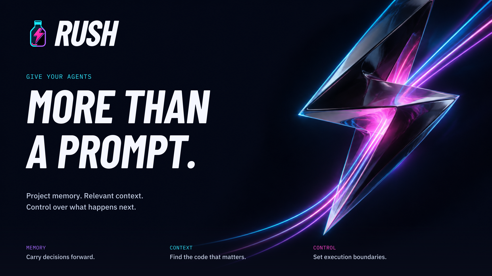
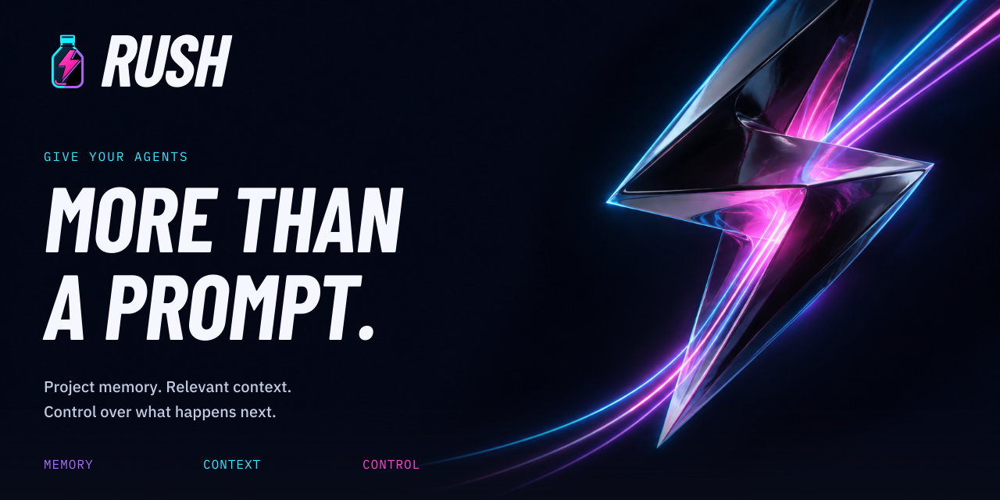
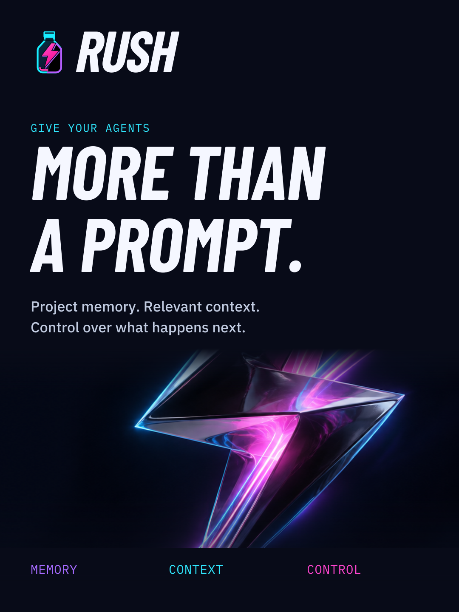
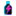
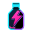
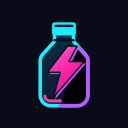
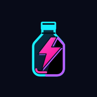
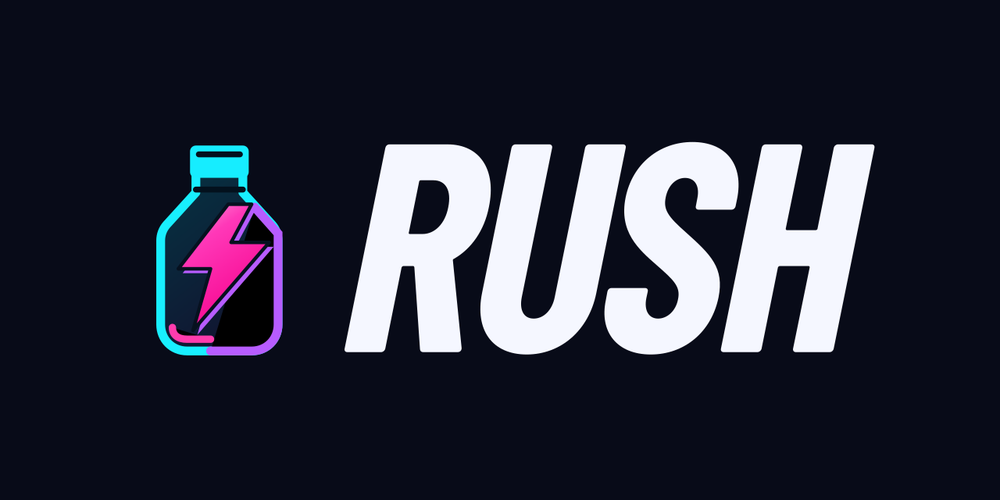
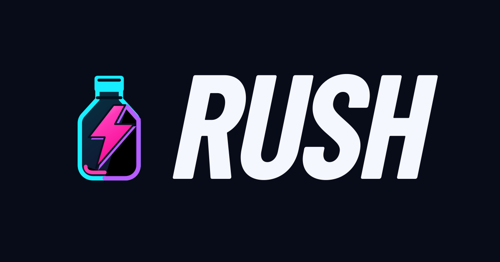

RUSH / Wordmark v2
Existing condensed italic identity, refined optical spacing, stronger forward lean. Font-independent vector outlines. Original bottle retained.
Download full asset kit · Formats and integration examples
Give your agents more than a prompt.
Project memory. Relevant context. Control over what happens next.

Desktop website / 2400 × 1350 · SVG · PNG
Product hero / GitHub and mobile

GitHub / 1280 × 640 · SVG · PNG

Mobile website / 1080 × 1440 · SVG · PNG
Wordmark
Light / dark surfaces
Dark / light surfaces
Cyan accent
One ink / white
One ink / black
Horizontal lockup
Color / dark surfaces
Color / light surfaces
One ink / white
One ink / black
Stacked lockup
Color / dark surfaces
Color / light surfaces
One ink / white
One ink / black
Application and browser icons
Small sizes use the existing bottle, keeping the full wordmark legible in larger placements.

16 px

32 px
64 px

128 px

Maskable / 192 px
GitHub and website sharing

GitHub / 1280 × 640

Website / 1200 × 630